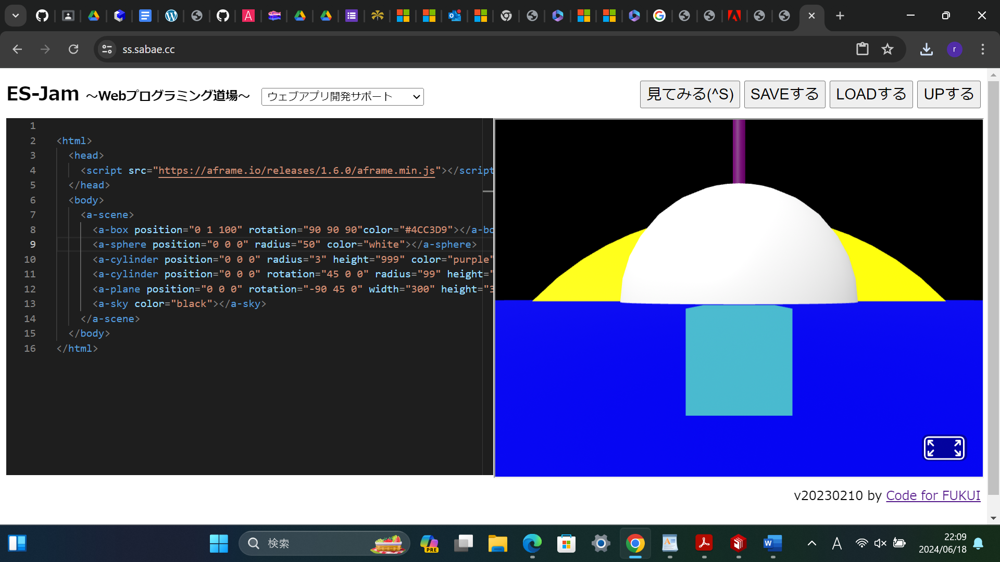

第3週目
3-1 JavaScript体験：VR空間を作る
自作した３次元空間
1.内容
Webプログラミング道場でオリジナルのVR空間を作った。このVR空間は立方体、2種類の円柱形、球体の３種類の立体図形と正方形の平面図形、そして空からできており、まず立方体は大きさ1、位置座標（0,1,100)、色は#4CC3D9である。次に1つ目の円柱形は底面の半径3、高さ999、位置座標（0,0,0）、色は紫であり、2つ目の円柱形は底面の半径99、高さ1、傾き（45,0,0）、色は黄色である。そして球体は半径50、位置座標（0,0,0）、色は白である。さらに正方形の平面図形は幅300、高さ300、傾き（-90,45,0）、色は青である。最後に空の色は黒である。
2.感想
今回初めて立体映像をプログラミングで編集してみて、図形の作り方が想像していたよりも基礎が簡単で楽しかった。さらに、図形の傾きやサイズ、位置、そして色などを細かく変更できることに驚いた。
Webプログラミング道場でオリジナルのVR空間を作った。このVR空間は立方体、2種類の円柱形、球体の３種類の立体図形と正方形の平面図形、そして空からできており、まず立方体は大きさ1、位置座標（0,1,100)、色は#4CC3D9である。次に1つ目の円柱形は底面の半径3、高さ999、位置座標（0,0,0）、色は紫であり、2つ目の円柱形は底面の半径99、高さ1、傾き（45,0,0）、色は黄色である。そして球体は半径50、位置座標（0,0,0）、色は白である。さらに正方形の平面図形は幅300、高さ300、傾き（-90,45,0）、色は青である。最後に空の色は黒である。
2.感想
今回初めて立体映像をプログラミングで編集してみて、図形の作り方が想像していたよりも基礎が簡単で楽しかった。さらに、図形の傾きやサイズ、位置、そして色などを細かく変更できることに驚いた。
3-3 JavaScriptプログラムの３次元空間の体験

1.内容
ないようないよう
2.感想
かんそうかんそう
ないようないよう
2.感想
かんそうかんそう